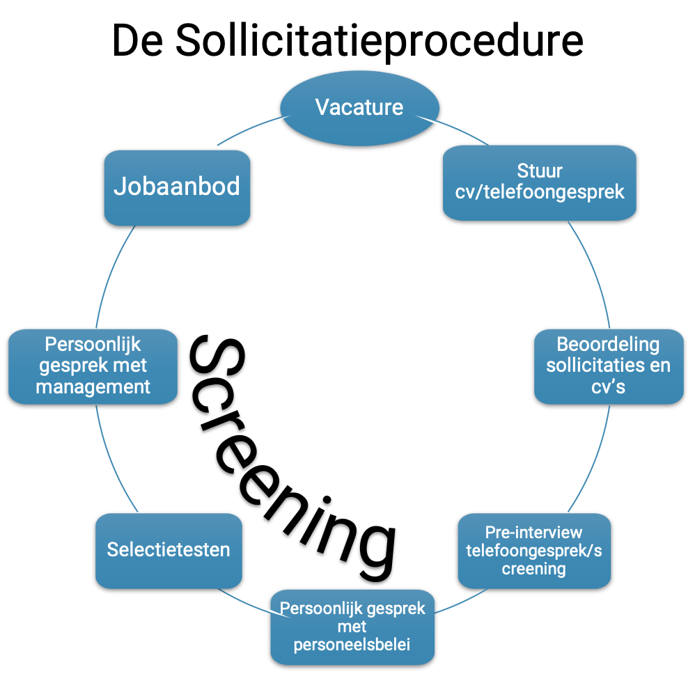

- Als je wordt
uitgenodigd voor een sollicitatiegesprek, kun je ervan uitgaan dat je tot dan toe alles goed
hebt gedaan. Om door het sollicitatiegesprek heen te komen en je kansen op het tekenen van
een contract te vergroten, moet je veel weten over het bedrijf zelf, maar ook over hoe
sollicitatiegesprekken in België verlopen.
- In het midden- en kleinbedrijf nodigen ze je uit voor een gesprek op basis van jouw schriftelijke sollicitatie (motivatiebrief en cv). Je krijgt ongeveer binnen één of twee weken na het gesprek te horen of je al dan niet wordt overwogen voor de functie.
- Grotere bedrijven hebben vaak meer uitgewerkte sourcing behoeften voor human resource management, dus het selectieproces zal over het algemeen wat langer duren, met ten minste twee gesprekken. Je wordt uitgenodigd voor een eerste gesprek, vaak in een assessment center waar je met andere kandidaten concurreert voor de functie. Als je de eerste ronde voltooit, krijg je meestal een uitnodiging voor een persoonlijker gesprek met de HR-manager. Een ander kort gesprek met je directe leidinggevende vindt plaats op dezelfde dag of tijdens een derde gesprek. Als je de selectieprocedure met succes hebt afgerond, krijg je binnen enkele dagen of enkele weken bericht of je de job hebt, afhankelijk van de drang van de vacature.

- Zelfs de slimste
en meest gekwalificeerde werkzoekenden moeten zich voorbereiden op hun sollicitatiegesprek. Je
vraagt je misschien af waarom. Gespreksvaardigheden worden aangeleerd, en er zijn geen tweede
kansen om een goede eerste indruk te maken. Een goed sollicitatiegesprek staat of valt met de
voorbereiding, dat kun je op elke vacaturesite lezen. Maar wat houdt een goede voorbereiding in?
Vier tips.
- Verzamel informatie (leer het bedrijf, de interviewer en de locatie kennen)
- Stippel de route uit
- Bereid het gesprek voor
- Wees voorzichtig en kies de juiste outfit
Meer info - Je moet 3 sterktes en zwaktes van jezelf kunnen benoemen (met voorbeelden die echt laten zien hoe die sterkte of zwakte zich toepast op de werkvloer). Een gebruikelijke eerste vraag in een Belgisch gesprek is de vraag: vertel me iets over jezelf. Wees dus bereid om deze vraag te beantwoorden door een snel overzicht te geven van je cv (niet te veel details).
- Richtlijnen
voor een typisch Belgisch sollicitatiegesprek:
- Het begin van het interview is het perfecte moment om je taalvaardigheid te laten zien. Als er andere talen nodig zijn, durf je die te spreken. Je zou bijvoorbeeld kunnen beginnen met "Aangename kennismaking". Aangezien België, en dan vooral Vlaanderen, erg gevoelig is voor talen, zal dit zeker gewaardeerd worden.
- Een zeer belangrijke maar vaak vergeten richtlijn is om je antwoorden altijd zo relevant mogelijk te houden. Geef nooit lange en eindeloze antwoorden! Luister goed naar de gestelde vraag en geef antwoord op de vraag.
- Tijdens je gesprek kan het bedrijf bepaalde vragen stellen die ze normaal gesproken niet zouden moeten stellen. Ze kunnen bijvoorbeeld vragen of je zwanger bent of een gezinsplan hebt. Ook kunnen ze vragen naar je persoonlijke gezondheid. Als je denkt dat je zulke gevoelige vragen liever niet beantwoordt, kun je aangeven dat je je ongemakkelijk voelt om hierover te praten en/of vragen hoe dit in verband staat met de job. Het is dan aan jou om te beslissen of je wilt werken in een bedrijf dat deze zaken bespreekbaar maakt.
- Als je een tekort in je cv hebt, wat heel normaal is als je net in een nieuw land bent aangekomen, kun je verwachten dat de recruiter je hiernaar zal vragen. Het beste is om eerlijk te zijn en uit te leggen welke moeilijkheden je hebt ondervonden, zoals het verkrijgen van je diploma, het verkrijgen van een werkvergunning, het leren van een nieuwe taal...
- Indien je ook bij andere bedrijven hebt gesolliciteerd, kun je dat openlijk zeggen. Het is de waarheid en het geeft aan in wat voor soort jobs je geïnteresseerd bent. Als dit de job is die jij wilt en de enige waar je voor gesolliciteerd hebt, kun je dit ook zeggen. Zo toon je jouw motivatie nog eens.
- Recruiters eindigen een gesprek meestal met de vraag of jij nog vragen hebt. Aarzel niet om vragen te stellen, want dit Q&A-moment is een unieke gelegenheid om nuttige informatie over het bedrijf te verkrijgen. Het is een extra kans om je interesse in het bedrijf te tonen. Je zou kunnen vragen wat voor projecten de job zal opleveren, hoe lang de interviewer al voor het bedrijf werkt, wat ze als werkgever het meest waarderen in hun werknemers.... Bereid 4 of 5 vragen op voorhand voor, zodat je altijd wat te vragen hebt.
- En vergeet niet dat sollicitaties een tweerichtingsverkeer zijn - je wilt de baan, maar het bedrijf wil ook een werknemer. Jij hebt dus ook het recht om jouw vragen te stellen. Zelfs als je geen speciale verzoeken hebt, vraag dan altijd wanneer je nieuws van hen kunt verwachten. (Dan hoef je niet elke dag te wachten tot de telefoon gaat!)
- Raak niet in paniek als ze je niet binnen een week op de hoogte brengen van hun beslissing! Je kunt het bedrijf bellen of e-mailen nadat de beloofde datum is verstreken.
- Bij het afscheid is de meest gebruikelijke manier om te eindigen met een stevige en vriendelijke handdruk en hen te bedanken voor hun tijd.
- Er zijn ook opleidingen over SOLLICITEREN, de details zijn te vinden op de VDAB-webpagina
- Meer info over het sollicitatiegesprek: Carrièreadvies 1, Carrièreadvies 2, Carrièreadvies 3